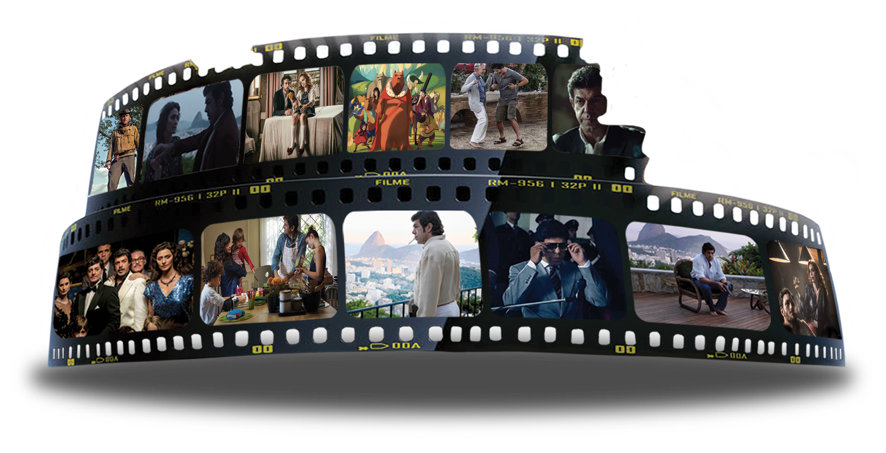

Página Inicial - Cinema
Curiosidades sobre o cinema:

- Os irmãos Lumière inventaram o cinematógrafo e o patentearam em 1895.
- O cinema também é conhecido como A Sétima Arte.
- Antigamente, os trailers passavam depois dos créditos.
- A Nigéria produz mais filmes que os EUA.
- Viagens no tempo são banidas nos cinemas e nas TVs da China.
- Em "O exterminador do futuro 2", Arnold Schwarzenegger recebeu o equivalente aUS$ 21 mil por palavra.
- Morgan Freeman estreou nos cinemas com 34 anos de idade.
- A Nasa mantém alguns filme a bordo da Estação Espacial Internacional.
- Sean Connery usou peruca em todos os filmes do James Bond que ele participou.